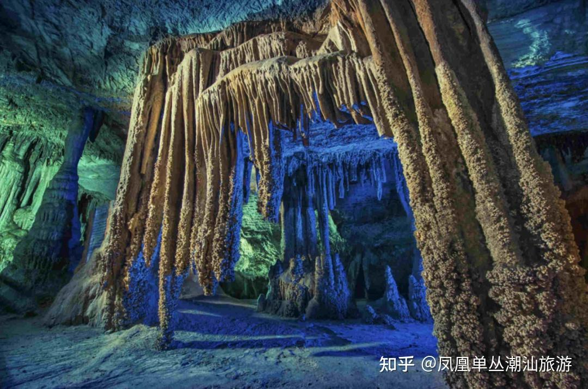

作品介绍
查看全部- 
《石花洞风景名胜区》
位于北京市房山区河北镇南车营村，距京城55公里，为七层溶洞，上下高差150米， 是国内发现的岩溶洞穴中集规模大、洞层多、沉积类型全、次生化学沉积物数量大的洞穴， 其美学价值和科研价值居世界洞穴前列，与闻名中外的桂林芦笛岩、福建玉华洞、杭州瑶琳洞并称中国四大岩溶洞穴，国家4A级景区，门票70元。

《承德避暑山庄外八庙风景名胜区》
河北承德避暑山庄东北部八座藏传佛教寺庙的总称，山庄景点有“36洞天，72福地”之说 ，在这里可以瞻仰西藏布达拉宫的气势，浏览日喀则扎什伦布寺的雄奇，领略山西五台山殊像寺的风采 ，欣睹新疆伊犁固尔扎庙的身影，还可以看到世界最大的木制佛像千手千眼观世音菩萨，是汉、蒙、藏文化交融的典范。 坝上围场因“木兰秋狝”而得名，秋季最适合游玩，彩色丰富，层次分明，摄影绝佳，建议游玩时间3小时，门票100元，是世界文化遗产。